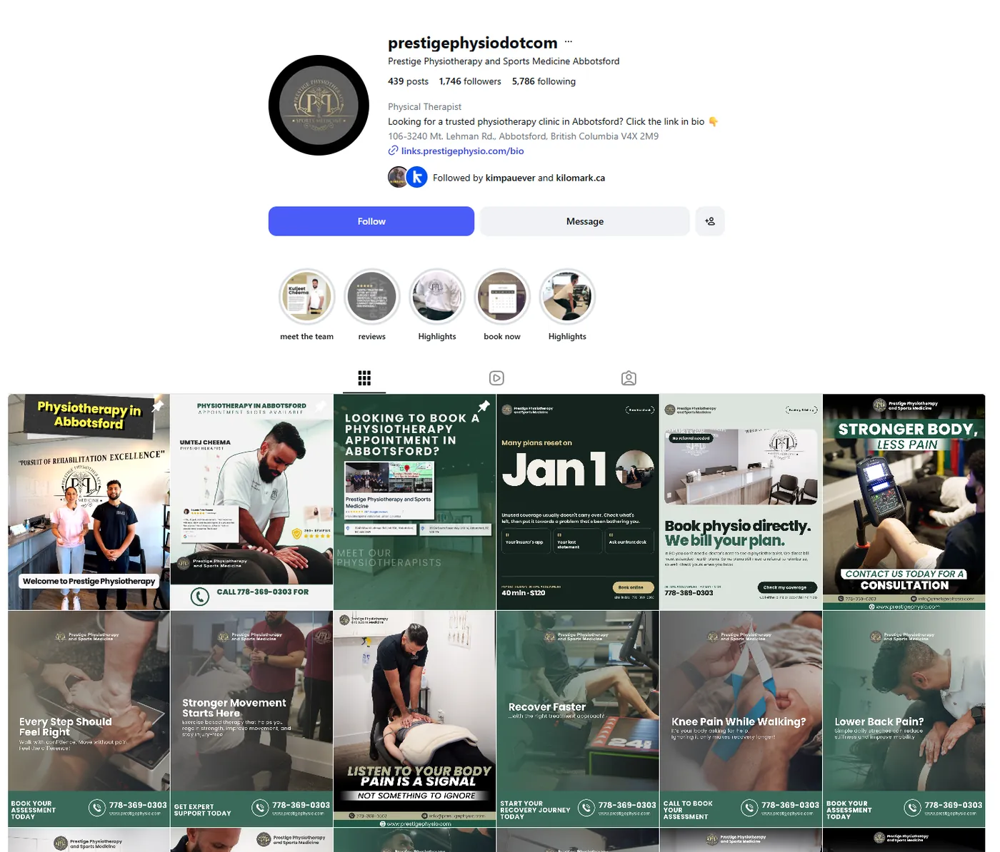

Social media for your clinic, done for you
We plan, design and post content that shows people what you treat and who treats them, so your clinic is the one they remember when they need care.
Everything handled for you
- A monthly content calendar planned around seasons and your services
- Branded posts, carousels and reels, three times a week
- Captions written for patients in plain language
- Story polls, Q&A boxes and highlights
- Instagram, Facebook and LinkedIn
- Your approval before anything goes live
- A monthly reach and engagement report

Sound familiar?
- Your last post was months ago
- Posts get likes but nobody books
- You don’t have time to design graphics
- Your feed doesn’t look like your clinic
What happens, and when
Monthly calendar
Topics tied to the season and the services you want to grow.
Design and write
Posts, reels and stories in your brand, sent for approval.
Post and report
Scheduled three times a week, with a short monthly report.
Planned around your seasons
| Month | Topic | Reel | Carousel | Story |
|---|---|---|---|---|
| April | Spring sports injury prevention | Warm-up demo | 5 ways to prevent spring injuries | Poll: getting active again? |
| May | Running injuries | Runner warm-up | Signs of shin splints or runner’s knee | Poll: training for a race? |
| October | Fall prevention | Balance exercise demo | Fall prevention tips | Mobility check-in |
Social media management questions
Don't see yours? Bring it to your discovery call and you'll get a straight answer.
Do I have to be on camera?
No. Voiceover reels, clinic photos and well-chosen stock footage work well. If your team enjoys being on camera, we’ll plan around that too.
Which platforms do you post to?
Instagram and Facebook for patients, plus LinkedIn if you want to reach employers, physicians and referral partners.
How does social media turn into bookings?
Every post points somewhere useful: a booking link, a condition page or a story highlight. Paired with ads, it keeps you in front of people who already visited your site.
Your competitors are marketing right now. Are you?
Every week without a system is a week the clinic down the street books the patients who should be booking with you. Start with a 30-minute discovery call.